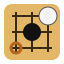

Caméra
Choisissez une caméra (ou le simulateur) ci-dessus.
Partie
Les pierres déjà posées au démarrage d'une partie deviennent la position de départ (handicap). Retirer la ou les dernières pierres annule les coups.

IgOGSLes pierres déjà posées au démarrage d'une partie deviennent la position de départ (handicap). Retirer la ou les dernières pierres annule les coups.